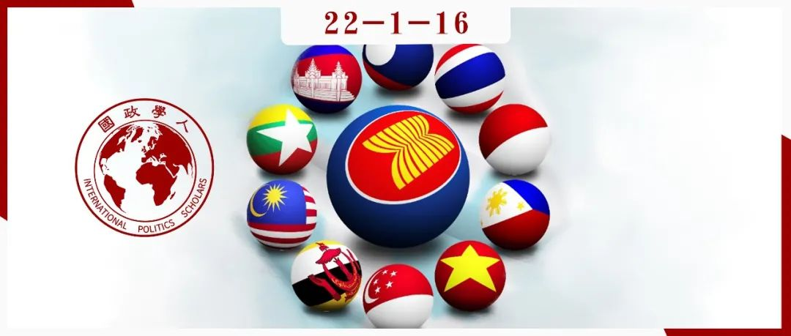

收录于合集 #《国际关系前沿》2022年第1期 23个

作品简介 ****
作者： Alistair DB Cook，新加坡南洋理工大学拉惹勒南国际关系学院高级研究员，学术研究主要集中在亚太地区和缅甸，特别是人道主义援助和救灾、外交政策与区域合作。
编译： 江若婵（国政学人编译员，伦敦政治经济学院）
来源： Cook, A. (2020) “Humanitarian Diplomacy in ASEAN”, in Asian Journal of Comparative Politics , 6(3), pp. 188-201.
归档： 《国际关系前沿》2022年第1期，总第40期。

导读
本文属于地区研究领域，主要讨论了一个非常新颖、较少在文献中被提及的人道主义外交问题，结论是东盟的人道主义外交相对于世界其他地区已取得较大的进展，但仍然处于一个不断发展的状态中。开篇时作者就强调人道主义外交与更为人所熟知的人道主义干预之间的不同。准确地说，前者是建立在对后者的批评的基础上的。以西方国家为主导的人道主义干预，或是responsibility to protect，一直受到第三世界国家的反对，认为这是假借人道主义之名进行侵犯主权之实。然而，因噎废食也是不可取的，这些国家也不能与人道主义援助一刀两断，尤其在受灾且本国能力实在有限的情况下。在此背景，人道主义外交才应运而生，天生即有尽量减少强权政治干预的使命。正如作者所说，这是一门艺术，参与人道主义外交的人员需要具有娴熟的外交技巧，将受灾人群与主权国家（通常还是外国）之间的分歧降到最低，确保救灾工作顺利进行。
人道主义外交对于一直想推进区域一体化的东盟来说是个绝佳的机会。因为东南亚各国自然灾害频发，多年的政治争端又使得互相间的信任度很低，大大降低了合作的可能性，与救灾相关的人道主义外交是仅有的与政治无关的议题之一。从当下的发展来看，东盟也确实用好了这个机会，弥补了在其他方面欠缺的一体化进程，甚至可以缓和东盟主权国家对于西方政治意图根深蒂固的怀疑。人道主义外交在东盟发展的结果也是正向的，不同国际援助机构之间由竞争逐渐转向合作，本国救援人员的能力也得到提升，降低了对于国际的依赖。本文还以详细的笔触介绍了东盟三国各自艰辛的人道主义外交发展的历程：菲律宾解决了受灾人群需求与救济严重不相符的问题，马来西亚将私营部门带入救济工作，而印度尼西亚则是发展出了与联合国崭新的合作模式，联合国人员也迅速地接受了改变的现状。
东盟的人道主义外交良性发展的另一个表现就是逐渐走出舒适圈，即应对自然灾害，而开始进军新的领域了，例如突发性公共卫生事件和军事冲突等非传统型的安全威胁。此次新冠疫情即为第一次检验，但因为时间并不比足够长，暂时无法得出确切结论。对于军事冲突情境来说，人道主义外交要尤为谨慎，引入军队救灾是潜在的矛盾爆发点。多年的军政府统治使得东南亚民众以及国际社会对于军队一直持有怀疑的态度，认为其有明显的政治立场，参与不与政治挂钩的人道主义援助不一定合适。文章关于这个论点的论述还是很具有解释力的。
东盟人道主义外交的局限性仍然是存在的，毕竟它兴起的时间并不算长，许多问题悬而未决，例如：这种经验是否意味着一个包含着更复杂的治理网络的新趋势的到来？建立复杂的人道主义治理网络是否会将决策者从直接的绩效合法性与问责制推向不透明的治理？这些问题都是对于新思考的启发。另外它似乎出现了“保面子”的问题，即人道主义需求与供给不匹配，以及它与东盟还有进一步融合的空间，例如东盟三大支柱之一的ASEAN Political Security Community内的各层机构。
摘要
东南亚区域合作的进展被耽搁了数十年而非数年。它所在的亚太地区常常遭受自然灾害，使得东南亚成为了世界上最容易受灾的地区。自2004年印度洋地震和海啸之后，已经有了三个能够塑造人道主义外交的重大趋势，即东盟作为一个平台参与、采取专业领域方式、使得多利益相关者环境多样化，创造了一个位于东南亚的多层次区域主义。东南亚的国家与社会已经证明了他们致力于建设人道主义实力，通常被称为“由国家主导，地区支持，必要时国际化”，以便他们能够领导救灾活动。应对自然灾害的经验为其它领域的人道主义工作提供了重要参考，尤其是突发性卫生事件和冲突环境。然而，全球人道主义系统超越区域和国家层面、普及到当地社区的本地化仍然远未实现。如果没有东盟成员国持续且实质性的政治承诺，该领域取得的进展可能仍然无法完成。
编译
01
引言
2016年世界人道主义峰会的与会者一致认为全球人道主义系统辜负了最需要它的人群，因而致力于将该系统改革为由当地领导的人道主义系统。东盟的领导人同样致力于这项人道主义改革进程。然而，在2004年印度洋地震与海啸的破坏性作用的推动下，东南亚在人道主义事务领域的进展已经开展很长一段时间了。作为世界上人口最多的地区，且经常面临自然灾害，这些发展是必要的。丰富的应对自然灾害的经验将如何影响东南亚的人道主义外交？本文将分几个部分回答这个问题。本文的结论是，虽然东南亚的人道主义外交向更加本地化的人道主义系统迈进，但这个过程才刚刚开始。需要考虑潜在的陷阱，以确保在东盟建立以需求为基础、当地主导、区域支持，以及国际必要的人道主义系统。
02
人道主义的出现
冷战结束时，“人道主义外交”的概念开始偏离“干涉义务（duty to interfere）”。“干涉义务”的概念在1910年得到承认并被定义为法律干预。对“干涉义务”的抵制来自南方国家，它们担心该概念将被用于合理化“西方炮舰外交”。这样的抵制为后来出现的“人道主义外交”奠定了基础。支持南方国家的学者认为，人道主义行动应该谨慎，而不是与政治干预混淆，也不要传达“强国霸权”和“家长式的白人男性”这样的形象。这导致在1990年代初，“干涉权”转向了基于国家的人道主义外交这样“更柔和的外交方式”。
然而，在考虑人道主义事务时，基于国家的人道主义外交通常并非第一个参考对象。相反，将红十字会建立为一个独立、中立和公正的实体，往往是以日内瓦公约为基础的国际人道主义法律演变的起点。这可以作为一个切入点，来讨论充斥着国家和非国家行为者的一个具有人道主义和救济任务的多元化领域，该领域已经构成了人道主义外交的生态系统。因此，研究红十字国际委员会如何定义人道主义外交就是必要的。红十字国际委员会认为人道主义外交包括四个具体特征：与包括非国家参与者在内的广泛联系人的关系；仅限于人道主义领域，促进和平并非其主要目标；独立于国家人道主义之外；采取一系列声明的形式，这些声明可能要保密，或需要动员人脉网络。
就人道主义外交的功能性而言，这是一门艺术，用以促进最佳救济，让最有效的参与者和沟通渠道参与进来，以避免不必要的延误，并触及最需要救济的人群。然而，人道主义格局向囊括本地和国际非政府组织的演化并未导致人道主义外交的正规化。的确，人道主义并没有属于自己的骨干外交官，而是非正式地运作，利用人与人之间以及机构间和机构内的安排来帮助最有需要的人群。它往往是在危机之前建立信任关系，为政府间达成更正式的协议、接触受灾人群奠定基础。这些政治协议是由官方外交官出于人道主义目的而达成的，服从于国家的政治和安全利益，可能与受灾人群的需要发生冲突。然而，人道主义外交力求在国家和司法框架内将人道主义规范与标准社会化，从而将国家与受灾人群双方考量之间的紧张关系降至最低。当灾难仅发生在单一国家境内时，人道主义外交变得更为重要，需要与政府和非政府的救济提供者谈判，以确保那些最有需求的人获得必要的支持，并将这些需求传递给最有能力提供给他们的人。因此，人道主义外交并非任何个人、机构、组织的领域，而是那些致力于保护受灾人群的人们的共同努力。
03
东盟的人道主义外交
东南亚人道主义外交在灾难应对方面最为有效，这对于世界上最容易遭受自然灾害的地区来说不足为奇。灾难面前严重的脆弱性导致了特定框架和实践社区的发展来应对这些具有毁灭性的事件。由于自然灾害似乎与政治无关，这成为了东盟内在区域合作和制度发展方面取得最大成果的一条路径。
2004年印度洋的海啸与地震造成了约228, 000人死亡，以及整个亚太地区大规模的社会与经济混乱。国际社会针对此次灾害发起了最大规模的人道主义援助工作，这项行动暴露了人道主义界的弱点，并为与国家、联合国机构、非政府组织、红十字与红新月运动以及私营部门建立亲密联系的新方式提供了动力。与之前方案不同的是，三方核心小组（The Tripartite Core Group）将受灾国家、区域组织和国际社会联合起来，共同促进人道主义救灾行动。它并非捐助国的协调机制，而是提供了一个东盟的平台，在国家政府和国际社区之间建立信任。东南亚的主权国家政府对于“西方”救援的动机深表怀疑，于是东盟作为一个区域性组织，在原本怀有敌意的双方之间提供了一个桥梁机制来协商如何接触在飓风Nargis之后最有需求的人群。该项行动为更深层次地参与东盟区域灾害管理和紧急事务应对。它向国际社会表明，东盟在人道主义紧急情况下可以成为一个有效的机制。
这并不意味着新兴的实践仅限于该地区的经验。这些人道主义行动的部分成员是在东南亚之外获得了经验，也有一些非东南亚的人在该地区获得了在不同情况下进行人道主义救援的相关经验。值得注意的是，一个核心实践社区在该地区的出现是由两个重大自然灾害催生的。在飓风Nargis的救援行动中，非政府医疗组织Merlin负责协调评估小队，大部分队员为其在灾难发生前培训的卫生工作者，其余人员则由受灾国本国工作人员构成。Merlin由于其早前开展的工作以及对于该国工作人员的培训而被接纳，这正是人道主义领域为了保持相关性、适应性和可预测性而必须进行的早期转型——将联合国工作人员纳入救援工作以提高总体能力，而不是让联合国和欧盟组织竞争，相对于短期需求而言向长期交流投资，并雇佣当地工作人员，而不是尽可能地依赖国际工作人员。
东盟成员国投资制度建设的方式包括指定国家灾难管理官员，以及在国家层面制定业务规则和程序，从而同时成为潜在的人道救援接收国和响应国。通过建立AADMER伙伴组织（APG），它们进一步为更具包容性的灾难管理开辟了道路。APG由当地和国际的非政府组织建立，以支持该地区在新兴的人道主义外交界中实行一项“以人为本”的协议。APG寻求在东盟和东南亚公民社会中扮演灾难管理和应急响应之间的桥梁，确保受灾群众的声音得到倾听。重要的是，在AADMER中，有一些值得注意的信息指向了更为广泛的区域人道主义外交，其视为灾难的范围超越了自然灾害。虽然该协议形成的主要原因无疑是该地区面临自然灾害的风险，但是起草者也确保了其相关性将提供针对其他情况的指导，例如新冠疫情大流行，这些情况都需要人道主义工作。
尽管在寻找运作空间方面取得了重大的进展，有人批评AHA中心在参与冲突情景时没有达到人道主义期望。虽然孤立地看待有些道理，这种批评常常误解了AHA中心在AADMER中的使命和职能，以及其相对来说有限的经验和技术能力。AHA中心由东盟成员国管理，在需要协调灾难响应使激活运作中心。因此，AHA受惠于东盟成员国。对于一个同意被该协议约束的个别成员来说，如果它想结束或拒绝援助，AHA中心即为它的特权。因此，在战略层面上它属于以国家为基础的人道主义行动，在AADMER范围内拥有操作层面上的独立性。因此，AHA中心不能脱离这些限制看待，但它的确提供了一条途径，通过APG、联合国、私营部门以及东盟对话伙伴（最显著的即澳大利亚、欧盟、日本和美国）紧密联结了广泛的利益相关者，包括公民社会团体、国际非政府组织。在“国家主导，地区支持，国际必要”的人道主义体系支持下，东盟已经直接或间接地成为了东南亚地区人道主义外交的主要场所。
04
多层次人道主义外交
除了东盟层面的正式发展之外，东盟成员国内部也出现了一些重大发展。这些现在通常被理解为在“一个东盟，一个响应（One ASEAN One Response）”下的发展，其中国内和区域发展以共同构成的方式交织在一起，来建设能力，让受影响的社区参与，并为该地区的人道主义外交提供了一个参考点。
东盟成员国内最突出的发展发生在菲律宾。2006年台风榴莲造成了多处泥石流掩埋村庄，需要大规模人道主义援助。这是一个重大的事件，指出当下需要建立一个强大的协调系统联结国际、新兴的区域以及地方的人道主义系统。这是对菲律宾救灾系统的一次大考验。菲律宾总统为此下达的行政命令授权财政部长豁免外国救灾物品的税收和关税。理论上来说，该系统提供了一个国家级协调机制来加快接受援助的效率。然而，这几乎没有满足当地的人道主义需求。相反，该机制清除了所有提供的物资，而非为所需的人道主义救援物品和能力筛选不同的方案。外国军队依据自己国家的指示，或与菲律宾武装力量直接协调。与此同时，除了菲律宾红十字会之外，几乎没有当地或国际的非政府组织利用该平台—加剧了救济物资与受灾社区之间需求的不匹配—受影响社区的需求与人道主义救济的优先层级之间仍然存在差距。
此外，2009年，在经历了几次灾难之后，菲律宾政府又签署了新的838号行政命令以成立国家公共重建特别委员会（公共委员会）领导灾后重建工作。公共委员会随后邀请该国私营部门共同努力。2015年末期，它涵盖了降低灾难风险的措施以及管理周期（减灾，准备，救济，恢复和复原），并已成为菲律宾境内主导的人道主义行为者。以台风海燕的经验，菲律宾制定了国家灾难响应计划（NDRP）来尽量减少对不同角色、职责，以及当地不同层级人道主义行动者之间的混淆。然而，实施NDP存在挑战，其中最大的挑战即是公民社会团体、地方政府单位、国家机构和国际社会之间不同的能力水平。也就是说，作为人道主义行动走在最前沿的本土化工作，位于东南亚这样一个人道主义外交的场所，这样促进接触的框架已经建立并仍在进行中。
马来西亚KitaMATCH是一个国家级人道主义协调中心，将人道主义供应（政府捐助者、人道主义组织）与需求（有需要的人）相匹配，由数据指导提供能力建设计划，从而加强社区复原力，提升国人对于人道主义议题的认知。这是一个独立的实体组织，符合全球人道主义原则，并建立在以公私伙伴关系为基础的模型上，由私营企业主导，并与政府和公民社会紧密合作。同时，它也是马来西亚新冠疫情与协调中心的一个组成部分。该平台具有显著的平民特征，并不像在菲律宾，国防部负责管辖国家灾难风险降低和管理委员会。该国的国家人道主义平台寻求增加透明度，采取的措施包括国家数据库交换、提供基于云技术的实时解决方案，来加速供给以及将人道主义条款和要求标准化。通过一个透明的多部门模式，马来西亚MATCH人道主义中心非常适合领导国家层面的协调。然而，区域机制和国际机制如何融入灾难期间的协调结构尚未确定。由于马来西亚相对来说没有那么受自然灾害的影响，与菲律宾类似的经历，即存在平行结构并导致角色和责任的混淆，不太可能在马来西亚出现，但其他同时发生的危机，例如还在持续的新冠疫情大流行和季风季节潜在的洪灾都会检测KitaMATCH的能力。
印度尼西亚则提供了东盟人道主义外交发展中一个不同的样例。在2018年苏拉威西地震之后，印度尼西亚政府接受了AHA中心的援助提议，并授权其作为印度尼西亚、国际人道主义界以及私营部门之间的接口。除此之外，联合国人道协调厅也适应新情境，在AHA紧急行动中心内安排工作人员来传授专业知识。虽然这遭到了联合国总部的抵制，但地方和区域的人道协调厅却更能适应现实，遵守了2016年在世界人道主义大会上的承诺，认可了东盟不断变化的人道主义格局，强调了由长期从业者开展人道主义外交的重要性，因为这样可以通过该机构的技术专长来确保持续的相关性。然而，国家层面对苏拉威西岛灾难的人道主义响应造成了一些国家政策方面的变化。印度尼西亚国家灾害管理组织2008年在雅加达成立，是一个国家级“消防机构”，并不像其他部级机构一样仅存在于省级和地方政府一级。这是一个在苏拉威西岛灾难后一个值得注意的挑战，当时它因扮演财务角色而非将救援物资大量部署到现场受到批评。这随后引发了总统对于该机制的改革，具有争议性地允许部署现役军官来管理文职，模糊了民选政府和军队之间的界限。军队在印度尼西亚和菲律宾的人道主义事务中的突出地位已经引发对于该地区人道主义援助军事化或安全化的担忧。虽然主要在后勤方面的军事能力提升是一个既定的活动领域，但仍然要谨慎地将军官派往人道主义前线行动。军事参与会影响受灾群众对于人道主义救援的看法。如果新兴的东盟人道主义外交界更实质性地将其活动拓展到冲突的情境中，而且军队还是冲突中的某一方，这就更需要谨慎了。
05
东盟人道主义外交的流动性
事实上，部分东盟的人道主义外交已经进一步发展成了一种“保面子”的变通方法，即一个成员国可以主动向另一个成员国提供人道主义援助，反过来受灾国也不太可能拒绝这种人道主义援助。这与一个受灾国在灾难发生时明确表示需要帮助的情况大相径庭。这样就会产生一个固有的困难，即加强了由供给驱动的人道主义系统，而非朝着一个由需求驱动的、服务于最有人道主义需求的人群的一个系统。东盟最近的发展表明，该地的人道主义系统的专业化程度在不断提高，旨在对受灾地区的人道主义救援进行去安全化（de- securitize）。区域人道主义的发展并非在外交部长级别做出决定，而是降低了进入壁垒，将人道主义救援程序化。该程序将援助请求标准化，当下的框架是在救灾时需要额外技术的领域与朋友合作。在地区层面，军队仍然是专注其物流专长。通过自然灾害的去安全化、目前正在进行的灾难管理领域的专业化，以及信任建立，东南亚为区域人道主义系统奠定了基础，尽管目前范围仅限于自然灾害，并涉及多方利益相关者，如政府、联合国机构、私营部门、非政府组织、红十字和红新月运动。
区域人道主义外交在灾难管理和紧急响应中的发展和经验对于其他非传统的安全威胁具有深远影响，例如疾病流行。最近，新冠疫情大流行扰乱了全球的治理体系。在东盟内部，这也是推动区域应对突发性卫生事件的一种催化剂。2020年末，成员国启动了“东盟突发性公共卫生事件战略框架”。
全球对于人道主义主流的理解往往包含冲突的情境，而这种期望常常导致主导东南亚地区经验的自然灾害的情境蒙上一层阴影。这并非无视受到冲突影响人群的需求，而是它可以深入地了解一个比其他人更容易受到自然灾害的影响的地区人道主义外交的起源。鉴于这一出发点，东南亚人道主义外交的概念更加全面，承认了活跃于人道主义领域的多方提供者。
06
东盟人道主义外交的未来轨迹
在灾难中提供人道主义援助的经验如何影响人们对该区域在冲突情境中的期待？首先，区域性人道主义的实践需要更系统地参与，超出灾难管理的局限。虽然它的确让灾难管理部门中不同的组织参与其中，例如政府、联合国机构、非政府组织、私营部门、红十字和红新月运动，其他领域和东盟机制内的组织却很少参与，尤其是那些与东盟政治安全领域（ASEAN Political Security Community）联系紧密的组织。2021年2月1日缅甸未遂的政变以及后续该国内部的冲突进一步佐证了东南亚人道主义界与东盟正式机制之间有限的实质性联系。
虽然东盟人道主义系统有能力评估需求，并安排救济物品的分配工作，但它也需要从领域外为冲突的动态环境寻求专业知识。其次，通过观察迄今为止区域人道主义系统的发展，一共花了将近20年的时间来发展具有政治决心的、用于人道主义救灾的国家实力和地区机制。新冠疫情大流行的影响提升了进一步推动针对突发性卫生事件的区域合作的政治意愿。目前，该地区将AAMDER超越自然灾害的界限、去应对冲突情境的政治意愿仍然有限。尽管如此，这并不意味着毫无出路。东盟人道主义外交的一个重要组成部分就是东盟秘书长的“斡旋”。东盟秘书长Lim Jock Hoi已获得了成员国的认可，在2020年建立了一个特别的支持小组来实行关于罗兴亚邦遣返进程的初步需求评估。2021年2月缅甸未遂的政变突显了东盟成员国的重要作用，即发展一个可接受的、区域主导、国际支持的响应工作来应对政治与人道主义危机。这些发展为更广泛的东盟区域提供了朝向人道主义事务的潜在的发展方向。
词汇积累
打断 ****punctuate
谨慎的 discreet
受惠地，感恩地 beholden
庇护，保护 ****aegis
泥流，滑坡 mudslide
筛查，检查 screen
液化 liquegaction
获得，收到 garner
审校 | 常佳艺 张潇文
排版 | 屈媛媛 彭雯昕
文章观点不代表本平台观点，本平台评译分享的文章均出于专业学习之用, 不以任何盈利为目的，内容主要呈现对原文的介绍，原文内容请通过各高校购买的数据库自行下载。

国政学人
支持学术公益与知识传播
微信扫一扫赞赏作者 __赞赏
已喜欢，对作者说句悄悄话
取消 __
发送给作者
发送
最多40字，当前共字
上一页 1/3 下一页
长按二维码向我转账
支持学术公益与知识传播
受苹果公司新规定影响，微信 iOS 版的赞赏功能被关闭，可通过二维码转账支持公众号。